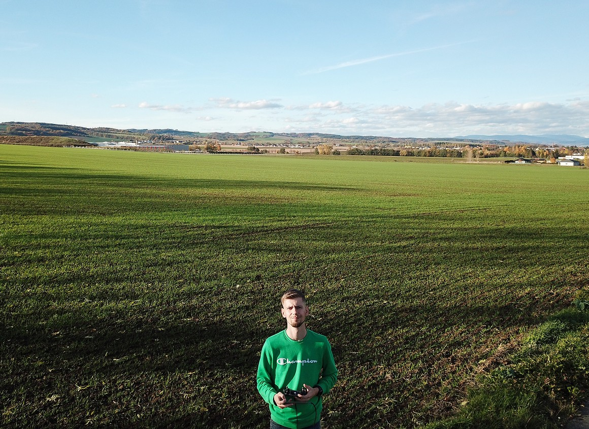
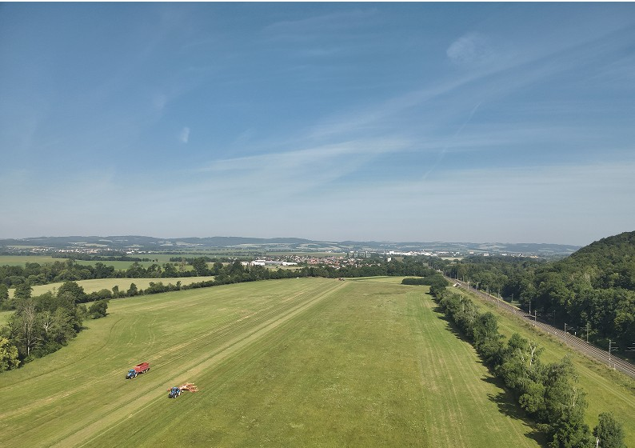
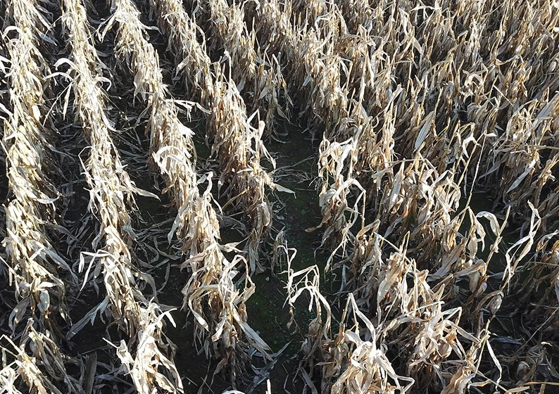
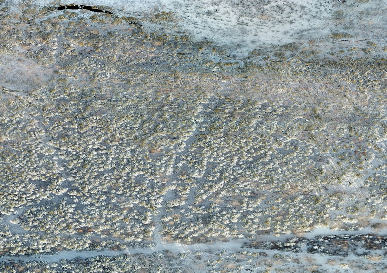

Hlídám vaše pole z nebe, abych ochránil vaši práci i výnos.

Precizní zemědělství v praxi
Moje služby
Jednoduše, srozumitelně, pro každého
Od ostatních mě odlišuje přátelský a lidský přístup – snažím se, aby vše bylo co nejjednodušší pro samotné zemědělce.

Minimalizuji papírování a nabízím i offline data k reportům pro ty, kteří nejsou zvyklí pracovat s počítačem.
Ukázky získaných informací
Digitální model terénu (DMT)
DMT zobrazuje výškový profil krajiny, tedy tvar povrchu země bez vegetace, budov či objektů.Používá se např. pro plánování závlah, odvodnění, setí nebo výpočet erozního rizika.
Vegetační mapa (NDVI)
Mapa z multispektrálních snímků ukazuje rozdíly v kondici porostu napříč polem.Pomáhá tak rychle odhalit problémové zóny – sucho, utužení půdy nebo nedostatek živin.
Variabilní dávkování (VRA)
Tato aplikační mapa ukazuje, kde a kolik hnojiva nebo osiva aplikovat podle aktuálního stavu pole.Barevné zóny určují různé dávky, které se při práci s GPS technologií automaticky mění podle potřeby rostlin.
Z výšky k lepším výnosům
Pomáhám zemědělcům využít sílu dat

Data, která mluví za vaše pole
Zajišťuji poradenství, monitoring a analýzu stavu polí pomocí multispektrální kamery, fotogrammetrie a družicových dat.

Pohled na škody z výšky
Na základě nasbíraných dat vytvářím analýzy a reporty pro SZIF i pojišťovny – například při škodách způsobených zvěří, krupobitím nebo záplavami.

3D modely a letecké záběry
Mapuji stavby, vytvářím 3D modely a pořizuji letecké záběry pro dokumentaci i prezentace.
Pokud tě zajímá, jak může precizní zemědělství pomoct právě na tvé farmě, ozvi se mi.
Rád se podívám na konkrétní možnosti a navrhnu řešení na míru.